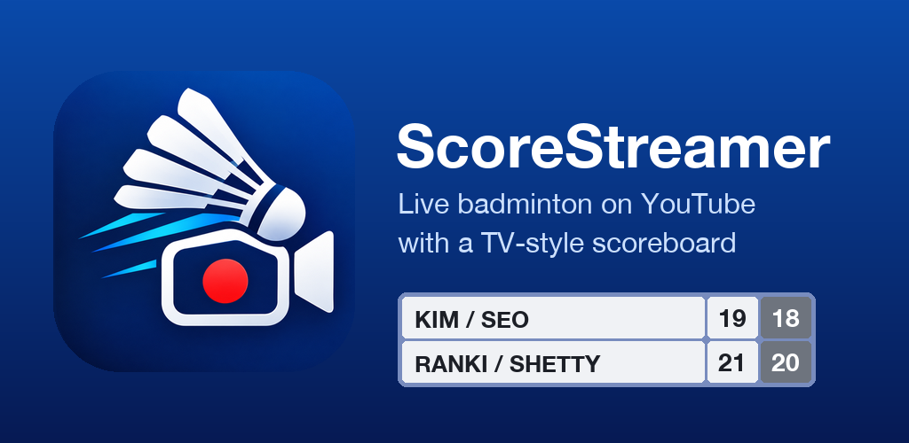

Stream badminton live to YouTube with a TV-style scoreboard, using two Android phones and no computer. One phone on a tripod films the court and streams; the other keeps the score, which appears on the video straight away.
Privacy Policy · Contact: brittovadakkethala@gmail.com
ScoreStreamer uses YouTube API Services. By streaming you agree to the YouTube Terms of Service.